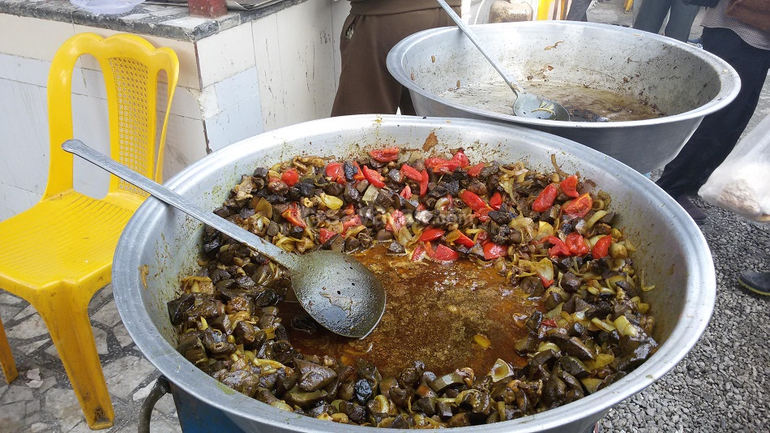

جغول مغول(واویشکا)
تاریخچه
واویشکای دل و جگر از غذای سنتی و بسیار پرطرفدار استان گیلان است که با دستورهای متنوعی درست می شود
مواد اولیه
- جگر گوسفندی
- پیاز
- جگر سفید گوسفند
- دل گوسفند
- گوجه فرنگی
- رب گوجه فرنگی
- زعفران دم کرده
- زردچوبه، نمک و فلفل سیاه
- روغن مایع
طرز تهیه
- برای تهیه واویشکای دل و جگر خوشمزه ابتدای کار جگر گوسفند را می شوییم، سپس درون آبکش قرار می دهیم تا آب اضافی اش خارج شود. در ادامه دل گوسفند را از وسط برش می زنیم، سپس به خوبی می شوییم.
- حالا دل را درون آبکش قرار می دهیم تا آب اضافی اش خارج شود. در ادامه جگر سفید را می شوییم، سپس درون آبکش قرار می دهیم و اجازه می دهیم آب اضافی اش خارج شود. در ادامه جگر گوسفند را روی تخته گوشت قرار می دهیم.
- در این مرحله جگر را به صورت نگینی درشت خرد می کنیم، سپس جگر سفید را به همراه دل همانند جگر به صورت نگینی درشت خرد می کنیم. در ادامه پوست پیاز را جدا می کنیم، سپس به صورت نگینی ریز خرد می کنیم
- حالا یک تابه مناسب روی حرارت ملایم قرار می دهیم، سپس مقداری روغن مایع درون آن می ریزیم. در ادامه بلافاصله پیاز خرد شده را به تابه اضافه می کنیم و چند دقیقه تفت می دهیم تا پیاز سبک و شیشه ای شود.
- در این مرحله مقداری زردچوبه به پیاز اضافه می کنیم و به تفت دادن ادامه می دهیم تا بوی خامی زردچوبه از بین برود. در ادامه دل را به همراه جگر و جگر سفید درون تابه می ریزیم، سپس تفت می دهیم تا تغییر رنگ بدهند.
- حالا رب گوجه فرنگی را به مخلوط دل و جگر اضافه می کنیم، سپس به تفت دادن ادامه می دهیم تا بوی خامی رب گرفته شده و رنگ آن باز شود. در ادامه گوجه فرنگی را می شوییم، سپس پوست آن را جدا می کنیم.
- حالا روی واویشکای دل و جگر حدود ۱ تا ۲ لیوان آب می ریزیم، سپس حرارت را زیاد می کنیم تا جوش بیاید. در ادامه زمانی که آب جوش آمد حرارت را کم می کنیم، سپس اجازه می دهیم دل و جگر به صورت کامل بپزد.
- در نهایت زمانی که آب واویشکای دل و جگر کاملا تبخیر شد، حرارت را خاموش می کنیم، سپس درون ظرف مورد نظرمان می ریزیم.